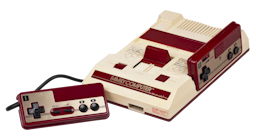
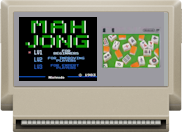
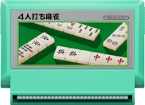
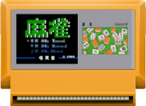

 |
Controles: |
||||
|
4 Player Strike Mahjong (4 jugadores) |
Hacé clic en un cartucho para jugar al juego correspondiente. 👇 Mahjong con Cartas Españolas (4 jugadores) Traducción a Español de 4 Player Strike Mahjong |
 Nintendo Mahjong (2 jugadores) |
|||
 ４人打ち麻雀 4 Nin Uchi Mahjong |
 麻雀 (任天堂) Nintendo Mahjong (2 jugadores) |
||||